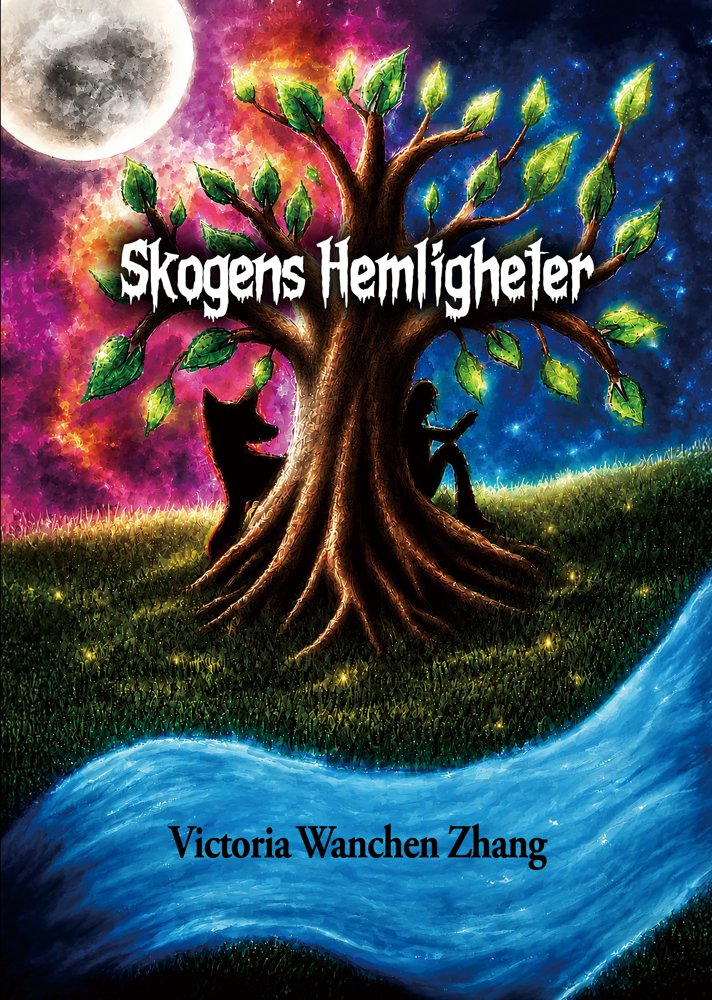

Vargarnas Öde · Del 1
Skogens Hemligheter
Människorna kallar oss monster. Vi kallar dem tvåbeningar. De är rädda för oss, hatar oss, eftersom vi är annorlunda.
En namnlös flicka hittas en dag alldeles ensam vid stranden med endast vaga drömmar från hennes förflutna. Hon får namnet XE4 och växer upp på en internatskola. En hemsk båtolycka elva år senare tvingar flickan att stå öga mot öga med sitt djupaste mörker. Hon lär känna sitt ursprung och får reda på vad hon är. Det blir en hemlighet som ingen får veta. Om människorna får reda på det kommer alla av samma sort som XE4 att lida och spärras in bakom laboratoriernas väggar.
Under sin resa för att hitta sin plats i livet möter XE4 fiender och utmaningar såväl som vänner och kärlek. Samtidigt som XE4 gör allt för att skydda skogens hemligheter måste hon kämpa mot sina inre demoner, skuggor från hennes tid hos människorna. Vem bestämmer egentligen vad och vem vi är? Går det att bryta sig loss från bojorna av andras åsikter? Är strid det enda sättet att bli en hjälte?
ISBN 9789153152941 · Svenska
Inspelningen har nått kapitel 4. Ljudfilerna bearbetas och publiceras här efter hand när de är klara. Tack för ditt tålamod!
Ljudfilerna publiceras här efter hand när de är klara.
- Serie
- Vargarnas Öde · Del 1
- Författare och illustratör
- Victoria Wanchen Zhang
- Utgivningsdatum
- Förlag
- Wei Huang
- Omfång
- 202 sidor · Upplaga 1
- ISBN
- 9789153152941
Ljud till boken
Ljudförteckning
Förord, Innehåll och Prolog blir fria att lyssna på när de publiceras. Övriga avsnitt kräver registrering. Registreringen förbereds. Avsnitt som ännu inte publicerats är märkta med ”Kommer snart”.